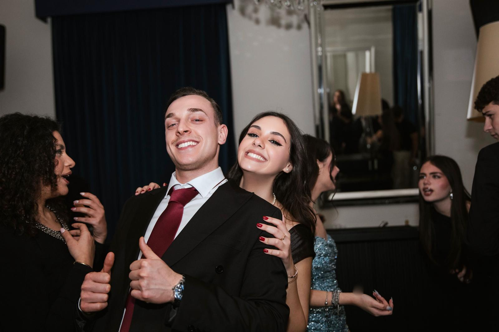

Amore cosa significa per me !
Quello che ho da dire su questo argomento ha un solo nome, ed è Valentina.
Lei per me rappresenta tutto quello che di buono c'è in una persona: sa come affrontare la vita, sa mettermi a mio agio e sa veramente cosa mi piace. Nella mia vita mi sento molto più grande e responsabile insieme a lei.
Sono solo sensazioni rispetto a quello che lei è capace di trasmettermi quando mi guarda con i suoi occhioni da cerbiatta. È come se, quando lo fa, io non avessi bisogno di nulla più nella mia vita. Tante volte ho immaginato noi su una spiaggia dopo una bella giornata, sperando che il mondo non sia solo sofferenza ed angoscia, ma anche momenti in cui il duro lavoro ripaga, e come lavora duro lei solo poche persone sanno farlo. Ogni volta che qualcuno mi chiede se esistono persone capaci nella vita, parlo sempre di lei. Sono così fiero di lei: questo non è solo amore, ma ammirazione, e questo non l'ho mai provato prima.

Questa è la mia foto preferita di noi due: rappresenta tutta la felicità che provavamo in quel momento. Eravamo alla festa di Daniela, un'altra persona molto speciale nella mia vita, che ha sempre saputo consigliarmi cosa fosse meglio fare nelle situazioni critiche. Con Valentina, lei è la mia spalla sia quando c’è da divertirsi, sia quando è il momento di farci delle ramanzine, tanto a me quanto alla stessa Daniela.
Voglio solo dire che io una persona come lei non la troverò mai, spero solo di essere meritevole di una persona come lei nella mia vita. Ecco cosa significa per me la parola amore ovvero tenere così tanto non solo ai sentimenti ma vedere quanto è bella l'altra persona al di fuori della relazione e lei è bellissima.